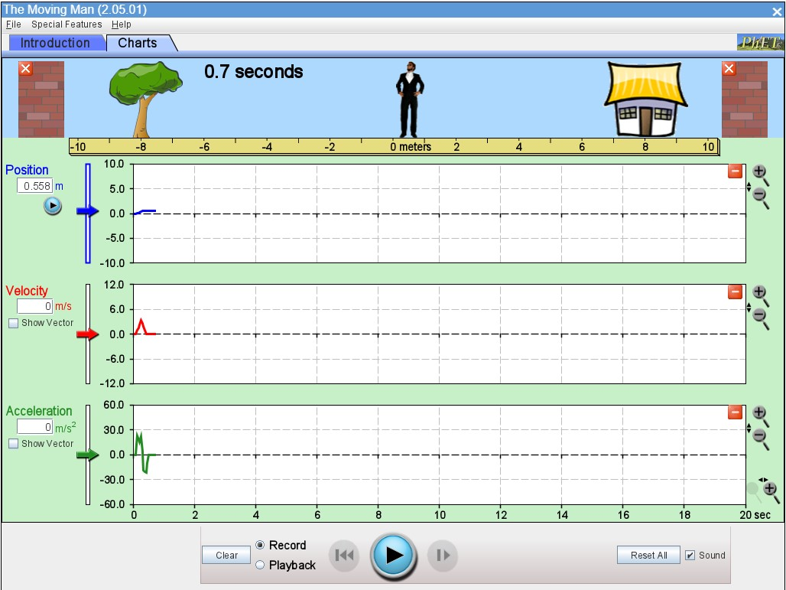

Laboratorio virtual: experimenta con el movimiento
¡Llegó el momento de investigar!
Hasta ahora has aprendido a calcular el desplazamiento, la velocidad y la posición de un objeto. Ahora vas a comprobar cómo se relacionan estas magnitudes mediante un experimento virtual.
En este laboratorio utilizarás una simulación interactiva para modificar el movimiento de una persona y observar cómo cambia su posición con el tiempo.
Objetivos del laboratorio
- Explorar cómo cambia la posición de una persona durante el movimiento.
- Relacionar el tiempo transcurrido con el desplazamiento.
- Interpretar gráficas de posición contra tiempo.
- Comprobar mediante cálculos matemáticos los resultados de la simulación.
Materiales
- Un computador con acceso a internet.
- La simulación interactiva de PhET.
- Cuaderno o documento para registrar los resultados.
Antes de comenzar
Recuerda que la velocidad media se calcula dividiendo el desplazamiento entre el tiempo transcurrido:
Velocidad media = desplazamiento ÷ tiempo
Observa cuidadosamente los datos de la simulación. Tu misión será actuar como científico: experimentar, registrar información, calcular resultados y explicar lo que descubras.
Simulacion: El hombre Movil

Experimento 1. Un movimiento con velocidad constante
Procedimiento
- Abre la simulación de PhET.
- Identifica el personaje, el eje de posición y las gráficas disponibles.
- Explora los controles de posición y velocidad.
- Configura un movimiento con velocidad constante positiva de 2 m/s, si los controles disponibles lo permiten.
- Inicia la simulación y observa cómo cambia la posición con el tiempo.
- Registra la posición del personaje en los instantes de 0, 1, 2, 3 y 4 segundos.
Tabla de resultados
Completa la siguiente tabla con los datos observados:
| Tiempo (s) | Posición (m) |
| 0 | - |
| 1 | - |
| 2 | - |
| 3 | - |
| 4 | - |
Preguntas de análisis
- ¿Qué ocurre con la posición cuando aumenta el tiempo?
- ¿Cuántos metros avanza el personaje cada segundo?
- ¿La velocidad se mantiene constante?
- ¿Qué forma tiene la gráfica de posición contra tiempo?
- ¿Cómo puedes calcular la velocidad media usando los datos registrados?
Evidencia de aprendizaje
Entrega la tabla completa y escribe una conclusión breve explicando cómo se relacionan la posición, el tiempo y la velocidad en el experimento.